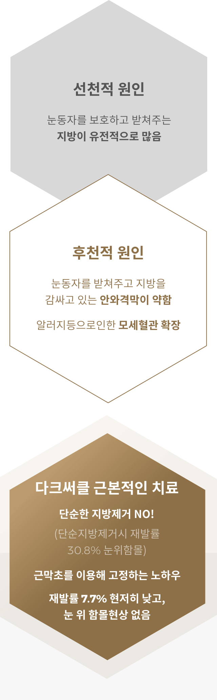

칙칙한 눈밑을
밝고 화사하게!
#다크써클
-

수술 시간
1시간
-

마취방법
수면/국소마취
-

실밥제거
4~7일후
-

내원치료
1~2회
-

회복기간
개인차 있음
다크써클이란?
눈 아래 피부가 거무스레하고 지방이
불룩하게 나와 있는 현상인 다크서클은,
본래 나이보다 많아 보이거나 건강해
보이지 못한 인상을 만들어 많은 이들의
심각한 고민입니다.
이는 눈꺼풀의 지방을 둘러싸고 있는
안와격막이 약해져서 지방이 불룩
튀어나오고 그림자가 생겨 눈 밑이 어둡게
보이는 증상을 나타냅니다.


다크써클의원인

다크써클
연령별 수술방법
나이가 들어갈 수록 늘어지는
눈밑 지방을 눈 안쪽 결막을 통해
비교적 간단하게 제거하는
수술방법으로 피곤해 보이는 인상을
건강하고 어려보이는 인상으로
만들어 줍니다.